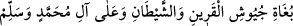

“(Allâh’ım kulun ve Rasûlün Muhammed’e, mü’min erkeklere ve mü’min kadınlara,
müslüman erkeklere ve müslüman kadınlara salât eyle.)”
Kim bu salevâtı okursa gün be gün malı çoğalır.
“(Allâh’ım yarattıklarının sayısınca Muhammed’e ve âilesine salât eyle. Allâh’ım
yarattığın şeylerin dolusunca/ağırlığınca Muhammed’e ve âilesine salât eyle.
Allâh’ım her şeyin sayısınca Muhammed’e ve âilesine salât eyle. Allâh’ım her şeyin
dolusunca/ağırlığınca Muhammed’e ve âilesine salât eyle. Allâh’ım Kitabının sayıp
döktüğü şeyler sayısınca Muhammed’e ve âilesine salât eyle. Allâh’ım Kitabının
sayıp döktüğü şeylerin dolusunca/ağırlığınca Muhammed’e ve âilesine salât eyle.
Allâh’ım ilminin kuşattığı şeylerin sayısınca Muhammed’e ve âilesine salât eyle.
Allâh’ım ilminin kuşattığı şeylerin dolusunca/ağırlığınca Muhammed’e ve âilesine
salât eyle.)”
Kâşifî şöyle demiştir: “Bu sekiz salevât, nücebâya nisbet edilmiştir. Onlar sekiz
kişidir. Sayıları hiçbir zaman artıp eksilmez. Hz. Şeyh (k.s.) Fütûhât’ta şöyle
buyurmuştur: “Onlar, sekiz sıfat ile muttasıf ilim ehlidir. Makamları kürsîdir. Yâni
keşifleri oranın dışına tecavüz edemez. Yıldızların hareketlerinden bahseden ilim
hakkındaki bilgileri, okumakla değil, keşif ve ilham yoluyladır. İbrâhim Edhem (k.s.)
bunları Mescid-i Aksâ hareminde Kubbetü’l-melâike’de görmüş, onlardan her biri
kendisine bu salevâttan bir tanesini öğretmiştir. İbrâhim Edhem şöyle demiştir: “Bu
kelimeler bereketiyle bize küllî tasarruflar verildi. Sahip olduğumuz hâl ve vecd bu vird
sebebiyle bizde galebe çalar. Bunun faydaları çoktur.” Nakledildiğine göre İbrâhim
Edhem ömrünün kalan kısmında bu salevâtı edaya riâyet etmiştir.”
“(Allâh’ım, küfür ve tuğyan fırkalarını parçalayıp dağıtan ve şeytanların
arkadaşlarının ve şeytanın ordularını darmadağın eden efendimiz Muhammed’e ve
Muhammed’in âilesine salât ve selâm eyle.)”
Şeyhü’l-meşâyih Sa‘deddîn Hamevî (k.s.)’tan şöyle rivâyet edilmiştir: “Eğer bir
kimse şeytanın vesvesesi, nefis ve hevâsının dağdağasından zarar ve ziyan görürse,